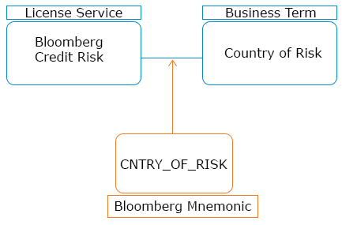

The Fusion agent stores technical and external data which can be loaded into Infogix Data3Sixty and made available for use in the glossary. Fusion can be thought of as a technical data dictionary, enabling you to utilize database, big data metadata, and structures for files of different types as part of the process of mapping business artifacts in Infogix Data3Sixty.
By using the Fusion functionality, Bloomberg field definitions and mnemonics can be loaded and made available to be mapped to business terms or license services within the glossary, or Eagle PACE or Markit EDM technical details can be loaded for mapping to glossary artifacts.
Take the following relationship:
"The Bloomberg Credit Risk license provides the Business Term Country of Risk"
There is business value in knowing this relationship alone, however with the addition of Fusion, you can add the technical side of this relationship. The Fusion data is shown in orange in the image below:

The Fusion agent requires a separate installation and runs via a schedule system, see Installing the Fusion agent.
See: